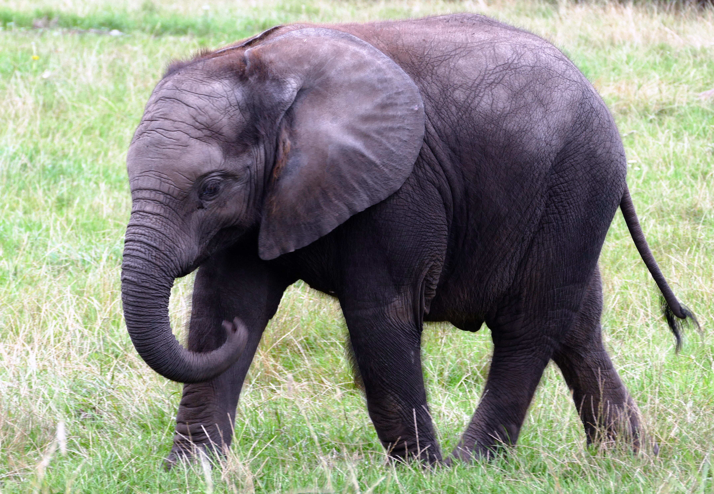
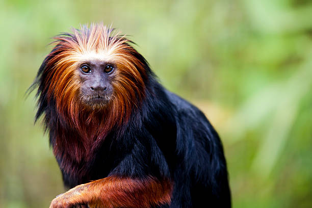
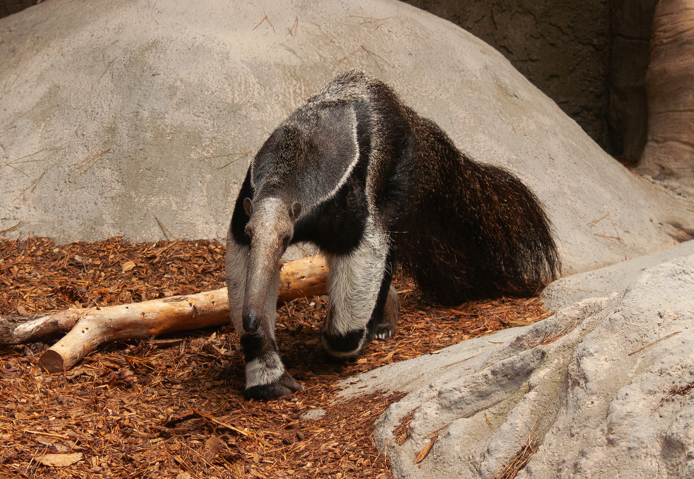

Animais
Em nosso zoo temos uma variedade significativa de animais em exposição, abaixo estaremos listando alguns.

Leão
Os leões apresentam uma pelagem amarela dourada e, quando jovens, observa-se a presença de manchas claras, as quais desaparecem à medida que o animal se torna mais velho. Na ponta da cauda, é observado um tufo de pelo preto. Os machos são maiores que as fêmeas e se destacam pela presença de juba, uma grande quantidade de pelos longos dispostos ao redor da cabeça. Apesar de não ocorrer com frequência, algumas leoas podem desenvolver jubas, mas o motivo pelo qual isso acontece ainda não é bem conhecido.
Os leões apresentam uma pelagem amarela dourada e, quando jovens, observa-se a presença de manchas claras, as quais desaparecem à medida que o animal se torna mais velho. Na ponta da cauda, é observado um tufo de pelo preto. Os machos são maiores que as fêmeas e se destacam pela presença de juba, uma grande quantidade de pelos longos dispostos ao redor da cabeça. Apesar de não ocorrer com frequência, algumas leoas podem desenvolver jubas, mas o motivo pelo qual isso acontece ainda não é bem conhecido.


Elefante
Corpo de grandes proporções coberto por uma pele grossa, frouxa e com pelos distribuídos de forma espaçada, auxiliando-os na transferência de calor do corpo para o ambiente e funcionando como um mecanismo de termorregulação. Apresentam uma cabeça grande com orelhas largas e achatadas, sendo que estas possuem formas e marcas especiais, como uma impressão digital.
Corpo de grandes proporções coberto por uma pele grossa, frouxa e com pelos distribuídos de forma espaçada, auxiliando-os na transferência de calor do corpo para o ambiente e funcionando como um mecanismo de termorregulação. Apresentam uma cabeça grande com orelhas largas e achatadas, sendo que estas possuem formas e marcas especiais, como uma impressão digital.
Lobo guará
O lobo-guará tem seu nome na origem tupi, na qual guará significa vermelho, o que remete à sua coloração laranja-avermelhada. Esse animal é o maior canídeo da América do Sul. Apresenta longas e finas patas, sendo as dianteiras e metade das traseiras na cor preta, assim como a sua crina presente no dorso e o focinho. A parte interna de suas longas orelhas, parte da cauda e a região interna do pescoço apresentam-se na cor branca.
O lobo-guará tem seu nome na origem tupi, na qual guará significa vermelho, o que remete à sua coloração laranja-avermelhada. Esse animal é o maior canídeo da América do Sul. Apresenta longas e finas patas, sendo as dianteiras e metade das traseiras na cor preta, assim como a sua crina presente no dorso e o focinho. A parte interna de suas longas orelhas, parte da cauda e a região interna do pescoço apresentam-se na cor branca.


Mico-leão-de-cara-dourada
Vive em grupos de até 12 animais, no qual há apenas uma fêmea reprodutora que gera dois filhotes por gestação. Alimenta-se predominantemente de frutos e insetos. Vive cerca de 15 anos. Dorme em oco de árvores. Ocorre no sul da Bahia e nordeste de Minas Gerais. Desmatamentos e comércio ilegal reduziram severamente sua população.
Vive em grupos de até 12 animais, no qual há apenas uma fêmea reprodutora que gera dois filhotes por gestação. Alimenta-se predominantemente de frutos e insetos. Vive cerca de 15 anos. Dorme em oco de árvores. Ocorre no sul da Bahia e nordeste de Minas Gerais. Desmatamentos e comércio ilegal reduziram severamente sua população.
Tucano
Seu longo bico é duro e cortante, sendo usado como uma pinça para capturar alimento. Apesar do tamanho, é muito leve, devido à estrutura interna, onde existem grandes espaços vazios. O tucano usa-o com grande habilidade, apanhando desde pequenas presas até separando pedaços de alimentos maiores. Suas bordas são serrilhadas e a força do tucano corresponde a seu tamanho. Para ingerir o alimento, lança-o para trás e para cima, em direção à garganta, enquanto abre o bico para o alto.
Seu longo bico é duro e cortante, sendo usado como uma pinça para capturar alimento. Apesar do tamanho, é muito leve, devido à estrutura interna, onde existem grandes espaços vazios. O tucano usa-o com grande habilidade, apanhando desde pequenas presas até separando pedaços de alimentos maiores. Suas bordas são serrilhadas e a força do tucano corresponde a seu tamanho. Para ingerir o alimento, lança-o para trás e para cima, em direção à garganta, enquanto abre o bico para o alto.


Tamanduá-bandeira
Rosto alongado e fino, grande língua com saliva pegajosa e garras fortes são evidências da adaptação do tamanduá a uma alimentação exclusiva à base de formigas e cupins. Solitário, encontra parceiros apenas para a reprodução. Nasce um filhote após gestação de 190 dias. Habita cerrados, campos e florestas úmidas das Américas do Sul e Central. A espécie é vítima de atropelamentos, incêndios e caça ilegal.
Rosto alongado e fino, grande língua com saliva pegajosa e garras fortes são evidências da adaptação do tamanduá a uma alimentação exclusiva à base de formigas e cupins. Solitário, encontra parceiros apenas para a reprodução. Nasce um filhote após gestação de 190 dias. Habita cerrados, campos e florestas úmidas das Américas do Sul e Central. A espécie é vítima de atropelamentos, incêndios e caça ilegal.
Coruja
Corujas são aves que apresentam cabeça grande, rosto achatado, grandes olhos e bico forte e curvado. São animais, em sua maioria, noturnos e bem adaptados a viver na escuridão, sendo capazes, por exemplo, de capturar suas presas mesmo contando apenas com a luminosidade garantida pela Lua.
Corujas são aves que apresentam cabeça grande, rosto achatado, grandes olhos e bico forte e curvado. São animais, em sua maioria, noturnos e bem adaptados a viver na escuridão, sendo capazes, por exemplo, de capturar suas presas mesmo contando apenas com a luminosidade garantida pela Lua.